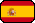
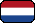

Currently a Machine Learning Engineer at Cosmose. Previously worked as a Data Scientist at Veneficus.
Obtained my MSc in Econometrics from Erasmus University Rotterdam, The Netherlands and my Bachelor of Qunatitative Methods in Economics & Information Systems from Warsaw School of Economics, Poland. My masters thesis project involved developing a method to make predictions for a collection of very short time series. The resulting R package can be found here.
Well-versed in applying state-of-the-art machine and deep learning, as well as traditional statistical inference - in Python and R. Experienced with probabilistic (Bayesian) programming in Stan. Successfully translated scientific papers into production code, adding own enhancements along the way.
| Ich spreche gut Deutsch und habe das Sprachzertifikat in Wirtschaftsdeutsch bestanden. | |
|  | Hablo un poco de español. He completado un curso de nivel avanzado. |
|  | Toen ik in Nederland woonde, leerde ik een beetje Nederlands. Ik begrijp veel, erger met spreken. |
| 我最近開始學習中文。這個非常困難。 | |
| Naturally, I do speak English too. | |
| Moim ojczystym jęzkiem jest polski. |
Whenever I can spare some time, I go mountain hiking. I am currently on a quest to climb the highest peak of each of the 46 European countries. You can track my progess here.